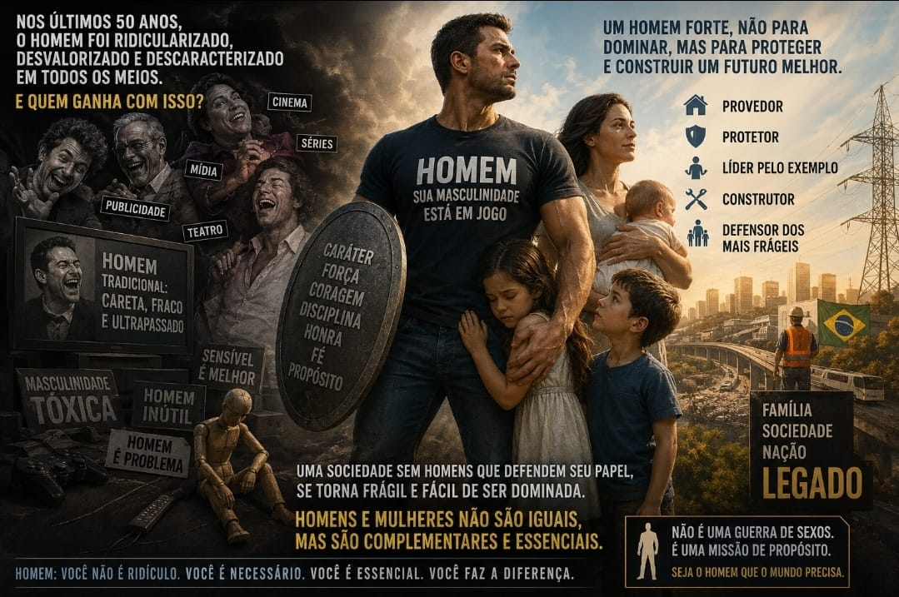

Masculinidade
Homem, você é necessário: por uma masculinidade saudável

Nas últimas cinco décadas, a sociedade passou por profundas transformações culturais, econômicas e tecnológicas. O papel da mulher mudou significativamente, com avanços importantes na educação, no mercado de trabalho, na política e na conquista de direitos. Esses avanços representam uma conquista histórica e devem ser reconhecidos e valorizados.
Ao mesmo tempo, uma pergunta tem surgido cada vez com mais frequência: o que aconteceu com a identidade masculina nesse mesmo período?
Essa não é uma discussão contra as mulheres, nem uma tentativa de diminuir suas conquistas. Pelo contrário. Uma sociedade forte depende de homens e mulheres fortes, conscientes de suas diferenças, responsabilidades e do valor que cada um possui.
Entretanto, muitos homens têm a percepção de que sua masculinidade passou a ser constantemente questionada ou ridicularizada na cultura contemporânea.
Como a cultura passou a retratar o homem
Basta observar parte da produção cultural das últimas décadas. Em muitos filmes, séries, novelas, peças de teatro e campanhas publicitárias, tornou-se comum encontrar o homem tradicional sendo retratado como imaturo, incompetente, irresponsável ou motivo de piada. Em contraste, personagens masculinos considerados mais sensíveis ou com características menos associadas ao modelo tradicional de masculinidade frequentemente recebem maior aceitação social.
Essa percepção é debatida por pesquisadores, jornalistas e psicólogos. Alguns enxergam essa mudança como uma correção de estereótipos antigos; outros entendem que, em certos casos, ela acabou substituindo um estereótipo por outro.
Independentemente da posição adotada, uma questão permanece: qual é o espaço reservado para uma masculinidade saudável?
Aquilo que os homens sempre carregaram
Historicamente, homens foram chamados a desempenhar funções que exigiam enorme esforço físico e emocional. Construíram estradas, pontes, sistemas de saneamento, linhas de transmissão de energia, enfrentaram minas, plataformas de petróleo, guerras e operações de resgate. Muitos aceitaram riscos extremos para proteger suas famílias, suas comunidades e suas nações.
Isso não significa que as mulheres não tenham desempenhado papéis igualmente fundamentais. Enquanto muitos homens enfrentavam os perigos externos, milhões de mulheres sustentavam famílias, educavam filhos, preservavam valores e mantinham a estrutura da sociedade. Não existe hierarquia entre essas contribuições; existe complementaridade.
Biologicamente, homens e mulheres apresentam diferenças reais. Em média, homens possuem maior massa muscular, maior força física e níveis significativamente mais elevados de testosterona. Mulheres, por sua vez, apresentam outras características biológicas e psicológicas igualmente importantes para o desenvolvimento humano.
Reconhecer essas diferenças não diminui ninguém. Pelo contrário: permite compreender que igualdade em dignidade não significa identidade absoluta de funções ou capacidades.
Talvez um dos maiores desafios atuais seja justamente esse: confundir igualdade de direitos com eliminação das diferenças naturais.
O que é, afinal, uma masculinidade saudável
Quando um menino cresce ouvindo que toda manifestação de força, coragem, liderança ou espírito protetor é automaticamente vista como algo negativo, ele pode acabar perdendo referências importantes sobre o que significa ser homem.
Masculinidade saudável não é violência. Não é autoritarismo. Não é arrogância. Também não significa ausência de sensibilidade.
Ser homem é assumir responsabilidades. É proteger sem dominar. É liderar servindo. É controlar sua própria força. É trabalhar, prover quando necessário, defender os mais vulneráveis e colocar o bem coletivo acima do interesse pessoal quando as circunstâncias exigem.
Ao longo da história, foram justamente essas virtudes que permitiram a construção das grandes civilizações.
O custo de uma sociedade sem homens comprometidos
Uma sociedade que perde homens comprometidos com responsabilidade, coragem e proteção pode tornar-se mais vulnerável. Em momentos de crise, guerras, desastres naturais ou ameaças externas, continua sendo indispensável haver pessoas dispostas a colocar sua própria segurança em risco para defender mulheres, crianças, idosos e toda a comunidade.
Isso não significa que apenas homens possam exercer atos de coragem. Mulheres demonstram coragem diariamente em inúmeras áreas da vida. Mas ignorar que diferenças biológicas influenciam determinadas funções também significa ignorar aspectos da própria natureza humana.
Nos últimos cinquenta anos, o Ocidente experimentou profundas mudanças culturais. Algumas produziram enormes benefícios. Outras ainda estão sendo avaliadas. O crescimento dos índices de depressão, isolamento social, queda na participação paterna em alguns contextos e dificuldades enfrentadas por muitos jovens na construção de sua identidade mostram que ainda existem perguntas sem respostas definitivas.
O mundo não precisa de menos homens
Talvez o caminho não seja atacar mulheres nem romantizar um passado idealizado.
O verdadeiro desafio seja recuperar uma visão equilibrada da masculinidade: um homem forte, disciplinado, trabalhador, emocionalmente maduro, capaz de amar sua família, respeitar as mulheres, proteger os mais frágeis e servir à sociedade.
O mundo não precisa de menos homens. Precisa de homens melhores.
Homens que não tenham vergonha de sua masculinidade. Homens que compreendam que força sem caráter é brutalidade, mas sensibilidade sem coragem é omissão.
A sociedade floresce quando homens e mulheres caminham lado a lado, reconhecendo que possuem igual dignidade, porém características distintas e complementares. Não se trata de uma guerra entre os sexos. Trata-se da construção de uma civilização onde ambos possam exercer plenamente seus dons e responsabilidades.
Quando homens deixam de acreditar no valor de sua própria missão, toda a sociedade perde. E quando homens e mulheres compreendem que são parceiros, e não adversários, todos ganham.
Romário Cruz